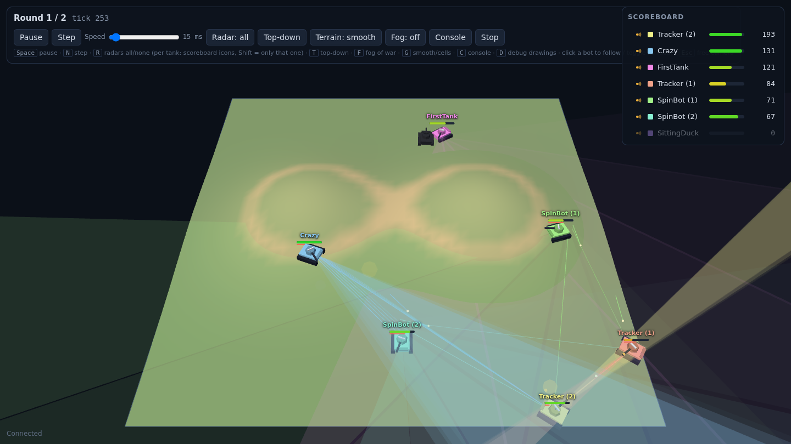
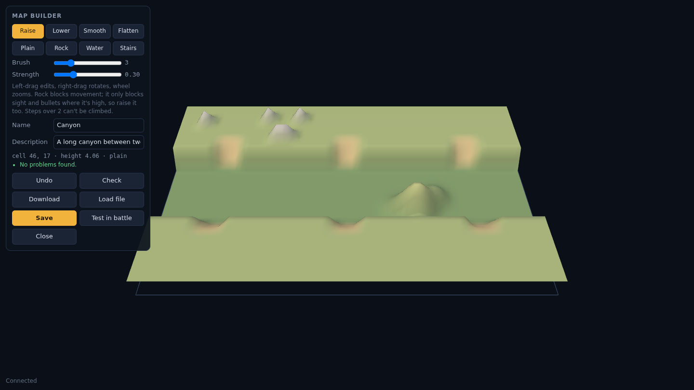
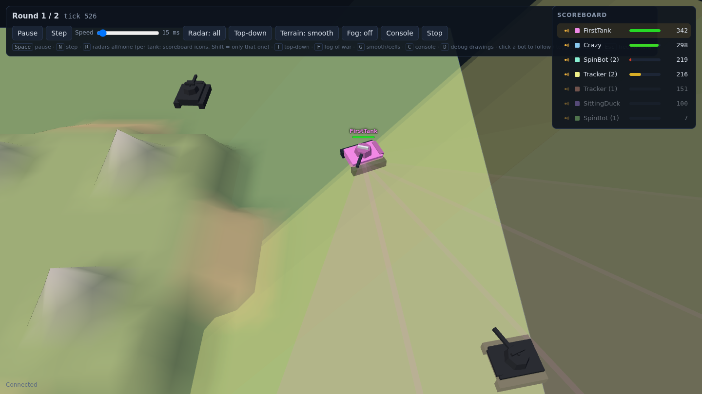
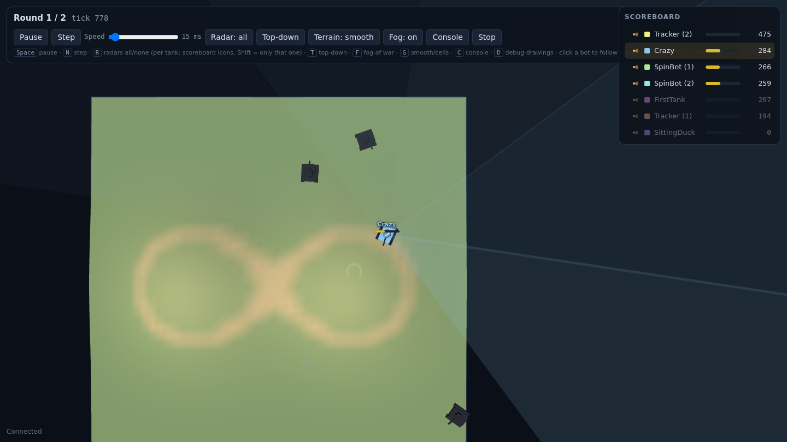
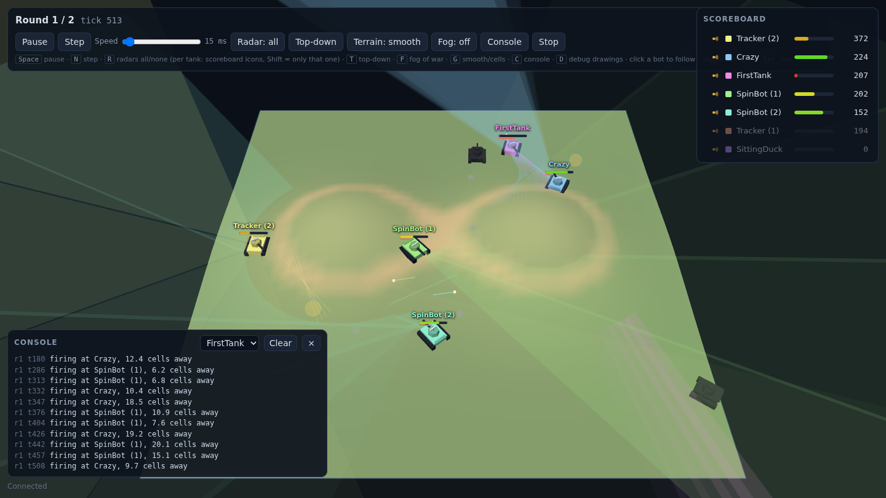
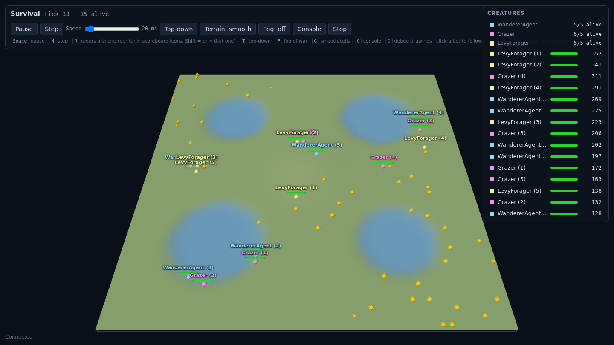
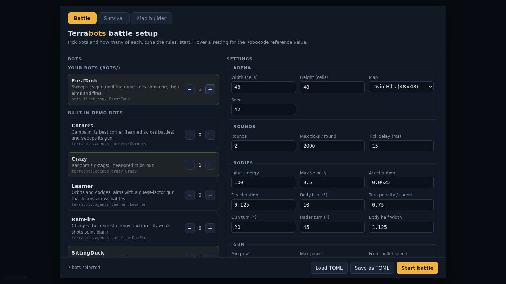
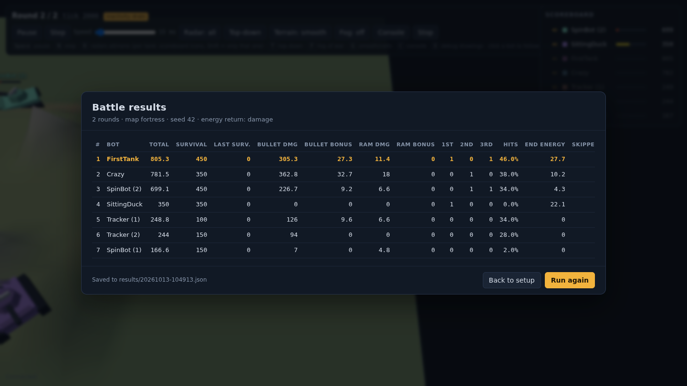

Terrabots is a Robocode-style battle arena for learning Python, AI, statistics and machine learning. Hills block your radar, high ground lets you shoot over cover, and steep slopes stop your tracks.
pip install -e ".[dev]" && terrabots-battle
Everything you remember from programming tanks, plus terrain that changes how you move, see and aim.
Elevation-aware line of sight for radar, bullets and messages. Rock and hills block, stairs give vantage, steep steps are impassable.
Three independent headings with per-tick turn limits. Lock your radar, lead your shots, dodge with anti-gravity movement.
Bullets cost energy and heat the gun; hits pay it back. Choose Robocode's rule, damage-dealt, or none, and compare strategies.
Run hundreds of seeded rounds from the CLI or Python and export JSON/CSV results for pandas, R or a spreadsheet.
Set up battles in the browser, watch radar sweeps and tracers, pause and single-step, follow a bot, read the results table.
An AdvancedRobot API with Robocode's queued commands and events, rules checked against RoboWiki, and onPaint-style debug drawing.
Seven hand-made arenas, seeded random terrain, or your own: sculpt hills, rock and water in the browser, check that every spot is reachable, save and battle.
Fog of war shows one bot's view of the world. A live console shows your bot's print and log() output; debug drawings show its plans.
No guns, just hunger: creatures forage, pay for every climb, and talk to each other. A guide walks from reflexes through foraging theory to learning and evolution.
Line of sight compares the terrain along the way with the sightline from your eye height. Bullets fly level at muzzle height, so whatever is taller stops them.
Each built-in map asks a different question: who takes the hill, who controls the choke point, who hides behind the wall.
maps/, shareable, usable from TOML, the CLI and Python.
from terrabots.battle import BattleAction, BattleAgent from terrabots.battle.geometry import normalize_angle class MyTank(BattleAgent): """Sweeps its gun until it sees someone, then fires.""" def decide(self, obs) -> BattleAction: if not obs.scanned_bots: return BattleAction(velocity=0.3, gun_turn=20) # search enemy = obs.scanned_bots[0] aim = normalize_angle(enemy.bearing - obs.gun_heading) return BattleAction( velocity=0.3, gun_turn=aim, fire=2.0 if abs(aim) < 5 else 0.0, )
Start from bots/first_tank.py. Every tick you get a BattleObservation and return a BattleAction.
terrabots-battle opens the setup screen. Your bot is already in the list; add a few demo opponents and press Start.
Run 100 seeded rounds headless, compare hit rates and survival, try radar locks, linear targeting, GuessFactors or a neural net.






Every bot in the repo fights every other one on seeded maps, 1v1 and all together, and the survival agents share the same worlds. Re-run weekly and whenever a bot is added.
| # | Bot | APS |
|---|---|---|
| 1 | Learner | 76.3 |
| 2 | Crazy | 74.3 |
| 3 | SpinBot | 64.3 |
| 4 | FirstTanktemplate | 59.7 |
| 5 | Corners | 47.4 |
| 6 | Tracker | 47.4 |
| # | Bot | Share |
|---|---|---|
| 1 | Crazy | 168 % |
| 2 | FirstTanktemplate | 150 % |
| 3 | Learner | 133 % |
| 4 | SpinBot | 114 % |
| 5 | Corners | 101 % |
| 6 | Tracker | 83 % |
| # | Agent | Lifetime |
|---|---|---|
| 1 | LevyForager | 220 |
| 2 | Grazer | 205 |
| 3 | Sharer | 171 |
| 4 | WandererAgenttemplate | 148 |
Generated 2026-10-13 by tools/tournament.py. Full tables and method.
The ladder is wide open: right now it's only the demo bots. Your bot takes part in the next run and stays on the board. Battle tanks and survival foragers are both welcome.
bots/first_tank.py.contrib/<your-github-name>/ and test it with tools/tournament.py --quick.Learn Python by making something that fights back. Geometry, state machines and debugging stop being abstract when your tank keeps missing.
One-file bots, readable source, tests for every rule and a VS Code setup that works on day one. Run a class tournament headless in seconds.
Seeded, deterministic multi-agent battles with partial observability, configurable rules and flat feature vectors for ML and RL experiments.
Python 3.11 or newer. Nothing else to install: the viewer runs in your browser.
git clone https://github.com/devbyandre/terrabots.git cd terrabots python3 -m venv .venv && source .venv/bin/activate pip install -e ".[dev]" terrabots-battle # → http://localhost:8765/ terrabots-battle battles/example.toml --headless